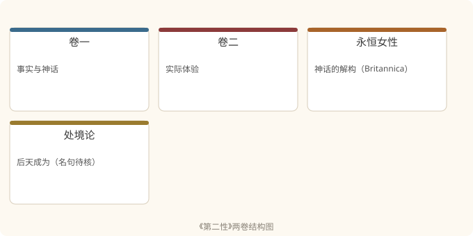

第二性
一、基本信息
| 作者 | 西蒙娜·德·波伏瓦 |
|---|---|
| 成书/出版 | 1949年两卷出版（Britannica：Le Deuxième Sexe, 2 vol. (1949; The Second Sex)） Simone de Beauvoir — Encyclopaedia Britannica（百科全书） |
| 国别/地区 | 法国 |
| 时代 | 现当代 · 20世纪 |
| 体裁 | 哲学论著 |
| 语言 | 法语 |

《第二性》两卷结构图（主题·结构图）
二、创作背景
Britannica：'a scholarly and passionate plea for the abolition of what she called the myth of the eternal feminine'（为废除永恒女性神话而作的学术而热情的呼吁）；'It became a classic of feminist literature'（已成女性主义文学经典——Britannica）。
版本史（Britannica）：1953年英译遭严重删节；2009年新译首次完整呈现原文。
三、内容脉络
卷一《事实与神话》：生物学/精神分析/历史唯物论的批判+神话分析（通说待核）。
卷二《实际体验》：女性从童年到老年的处境书写（通说待核）。
核心命题：女人是'第二性'——他者化的产物（通说）。
四、主要人物表
| 人物 | 身份 | 说明 |
|---|---|---|
| 波伏瓦 | 论者 | 以哲学与个案双轨写作 |
五、主题与艺术特点
- '永恒女性'神话的解构（Britannica）。
- 处境论：性别是被造就的（通说；名句'One is not born, but rather becomes, a woman'待核）。
- 身体、劳动与自由的处境分析（通说）。
六、影响与评论
- Britannica：女性主义文学经典（classic of feminist literature）。
Simone de Beauvoir — Encyclopaedia Britannica（百科全书） - 对20世纪60年代以降女性主义运动的理论奠基（通说待核）。
Simone de Beauvoir — Encyclopaedia Britannica（百科全书）
七、阅读建议
难点
- 哲学与生物学的跨学科密度。
- 1953年英译删节问题——读2009年后新译。
- 郑克鲁译本（上海译文出版社，通说待核）。
- 桑竹影/南珊早期译本（对照版本史）。
先读卷二导言与开篇（名句所在）→ 卷一神话章。
八、待核实
- 'One is not born, but rather becomes, a woman'原文核对。
- 郑克鲁译本信息核对。
- 《现代》杂志1945年创刊核对。
本页主要来源
西蒙娜·德·波伏瓦的其他收录作品：第二性